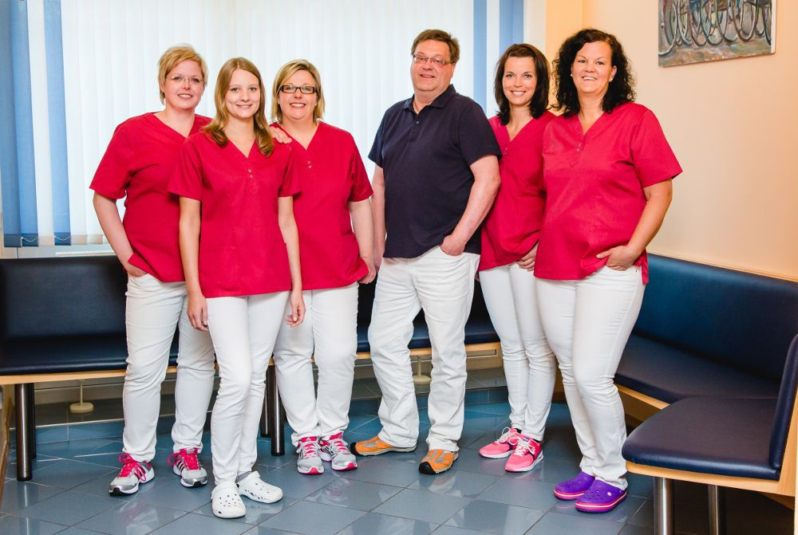

Zahnarztpraxis Breul
Seit 1998 sind wir in Wettringen für Sie da. Unsere Aufgabe ist der Erhalt Ihrer Zahn- und Mundgesundheit. Ihr Wohlbefinden und Ihre Sicherheit stehen dabei im Mittelpunkt unserer Arbeit.
SprechzeitenMo 8.30–12.00 und 14.30–18.00 · Di 8.30–12.00 und 14.30–19.00 · Mi 8.30–12.00 · Do 8.30–12.00 und 14.30–19.00 · Fr 8.30–12.00 Uhr, und nach Vereinbarung.

Schnell zum richtigen Weg
Termin wünschen
Sie sagen uns, worum es geht und wann es Ihnen passt. Wir rufen zurück und bestätigen den Termin. Auch außerhalb der Sprechzeiten möglich.
Terminwunsch sendenAngst vor dem Zahnarzt?
Wir nehmen uns Zeit, erklären jeden Schritt und machen Pausen, wenn Sie sie brauchen. Auf Wunsch ist eine Behandlung in Vollnarkose möglich.
So läuft es bei uns abSchmerzen oder Notfall
Während der Sprechzeiten rufen Sie bitte direkt an. Außerhalb hilft der zahnärztliche Notdienst. Dazu: was bis zum Termin hilft.
Notdienst und SoforthilfeWas wir für Sie tun
Zu jeder Behandlung erklären wir, was sie bringt, wann sie sinnvoll ist und was die Krankenkasse übernimmt. Kurz und verständlich.
Vorsorge und Zahnreinigung
Kontrolle, Bonusheft, professionelle Zahnreinigung für Erwachsene, Jugendliche und Kinder.
Füllungen
Karies entfernen und den Zahn wieder aufbauen, zahnfarben, wenn Sie das wünschen.
Zahnersatz
Kronen, Brücken und Prothesen, mit Kostenplan vor der Behandlung.
Zahnfleischbehandlung
Parodontitis erkennen und behandeln, damit die Zähne fest bleiben.
Wurzelbehandlung
Entzündete Zähne erhalten statt ziehen.
Schienen und Schnarcherschienen
Bei Zähneknirschen, Kiefergelenkbeschwerden und Schnarchen.
Behandlung in Vollnarkose
In Zusammenarbeit mit einer Fachpraxis für Anästhesie, für Angstpatienten und größere Behandlungen.
Kinder und Jugendliche
Früh anfangen, spielerisch gewöhnen, Zähne versiegeln.
Wir erinnern Sie an die Kontrolle
Zweimal im Jahr zur Kontrolle, das zahlt die Krankenkasse, und jeder Stempel im Bonusheft erhöht später den Zuschuss für Zahnersatz. Damit Sie keinen Termin vergessen, erinnern wir Sie auf Wunsch, wenn die nächste Vorsorge ansteht: per Brief, Anruf oder E-Mail, wie Sie möchten.
So viel Zuschuss gibt es für Zahnersatz
| Bonusheft | Zuschuss der Kasse |
|---|---|
| ohne | 60 % der Regelversorgung |
| 5 Jahre lückenlos | 70 % |
| 10 Jahre lückenlos | 75 % |
Festzuschuss-Regelung der gesetzlichen Krankenkassen seit Oktober 2020. Für Kinder und Jugendliche gilt eine Kontrolle im Jahr.
Seit 1998 in Wettringen
Zahnarzt Hans-Dieter Breul und sein Team behandeln Sie in hellen, ruhigen Räumen Unter den Linden 2. Die Hygiene der Praxis entspricht den Vorgaben der Zahnärztekammer Westfalen-Lippe; das hat die Kammer 2018 schriftlich bestätigt.
- Kostenlose Parkplätze direkt vor der Praxis
- Barrierefreier Zugang über eine Rollstuhlrampe
- Abendsprechstunde dienstags und donnerstags bis 19 Uhr


Damit der Besuch leicht fällt
Zum ersten Mal bei uns?
Bringen Sie Ihre Versichertenkarte und, falls vorhanden, Bonusheft, Allergiepass und eine Liste Ihrer Medikamente mit. Kommen Sie gern zehn Minuten früher für den Aufnahmebogen.
Schrift zu klein?
Oben rechts finden Sie den Knopf A A. Damit wird die Schrift auf allen Seiten größer. Die Seite merkt sich Ihre Wahl.
Leichte Sprache
Die wichtigsten Informationen zur Praxis gibt es auch in Leichter Sprache.
Arbeiten in der Praxis
Zahnmedizinische Fachangestellte, Prophylaxe, Ausbildung oder Praktikum: Wer in Wettringen in einem kleinen, eingespielten Team arbeiten möchte, kann sich in zwei Minuten vom Handy aus melden. Ohne Anschreiben, ohne Hürden.

Kurze Nachricht an die Praxis
Sie möchten einen Termin, einen Rückruf oder haben eine Frage? Schreiben Sie uns, wir melden uns. Am schnellsten geht es telefonisch unter 02557 985808.
Bitte beschreiben Sie hier keine Beschwerden oder Diagnosen. Das besprechen wir in Ruhe am Telefon oder in der Praxis.
Danke, Ihre Nachricht ist angekommen.
So würde es in der fertigen Website laufen: Die Praxis bekommt Ihre Nachricht per E-Mail und meldet sich in der Regel am nächsten Werktag während der Sprechzeiten. Bei Schmerzen rufen Sie bitte direkt an: 02557 985808.